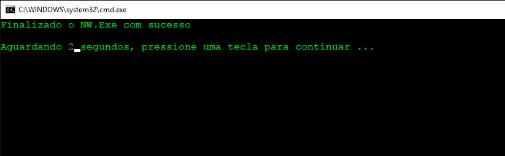

Matar processo do NW.exe

Um problema muito comum durante o desenvolvimento usanod a game engine Construct2 e o programa Nw.exe como render desktop, é em alguns momentos após fechar o nw.exe o processo continua rodando, mesmo com a janela fechada, é conhecido como processo fantasma, que aparece no gerenciador de tarefas e possui uma PID. Com este problema em mente, resolvi buscar uma solução simplificada para que o seja fechado o processo de forma mais rápida possível, aproveitei meus conhecimentos longíncuos de programação em scripts, que utilizo para outros fins no meu atual sistema operacional.
O que é PID? PID significa Process identifier (identificador de processo), PID ou ainda process ID é um número único que é atribuído pelo sistema operacional quando um processo é executado. Esse número é utilizado para se fazer referência a um processo em execução.
A maioria dos navegadores reconhecem arquivos .bat como potenciais ameaças, por este motivo eu deixo abaixo o código do arquivo. Pegue o código e cole em um arquivo no formato .bat, que pode ser também um arquivo .txt, renomeie ele para .bat.
Como matar o processo do NWjs.exe.
@echo off set proceso=nw.exe tasklist>%tmp%\tmp.txt find /i "%proceso%" "%tmp%\tmp.txt">%tmp%\pid.tmp IF ERRORLEVEL==1 ( color C echo Nao foi encotrado o "%proceso%" no sistema timeout /t 3 ) for /f "tokens=2 skip=2" %%p in (%tmp%\pid.tmp) do ( color a cls tskill %%p echo Finalizado o NW.Exe com sucesso timeout /t 3 exit )
@echo off, vai retirar o caminho do sistema. set proceso=nw.exe, cria uma variável e armazena a string que contém o nome do progrma a ser fechado. tasklist>%tmp%\tmp.txt, pega o conteúdo do comando tasklist que vai mostrar todos os processos que estão rodando no sistema operacional, joga em um arquivo tmp.txt que fica na pasta temporária do sistema operacional. find /i "%proceso%" "%tmp%\tmp.txt">%tmp%\pid.tmp, o comando "find" localiza uma cadeia de caracteres de um texto, no caso do código acima, ele procura a string da segunda lina "nw.exe" dentro do arquivo tmp.txt, depois grava o segundo arquivo "pid.tmp". IF ERRORLEVEL==1, será verificado se existe um processo com a string que foi guardado na variável, caso não tenha retorno, a cor da fonte do script será modificada para vermelho e exibir a mensagem "Nao foi encotrado o "%proceso%" no sistema", assim terminando o processo do script. Caso encontre a referência da string, essa linha será ignorada e vai iniciar o looping pelo comando "for". timeout /t 3,será mostrado um contador regressivo iniciando em 3, terminando a contagem o scrip será fechado. for /f "tokens=2 skip=2" %%p in (%tmp%\pid.tmp) do (, será executado um looping verificando o arquivo "pid.tmp". color a, muda a cor do script para verde. echo O proceso "%proceso%" tem o pid --^> "%%p", será exibido a mensagem com o nome "nw.exe" junto com a sua PID encontrada. cls, limpa a tela. tskill %%p, tskill é o comando para matar o processo echo Finalizado o NW.Exe com sucesso, será exibido a mensagem com o nome do processo que foi finalizado, junto com a contagem regressiva. exit, limpa a tela.
Clique no Spoiler para exibir o código explicado